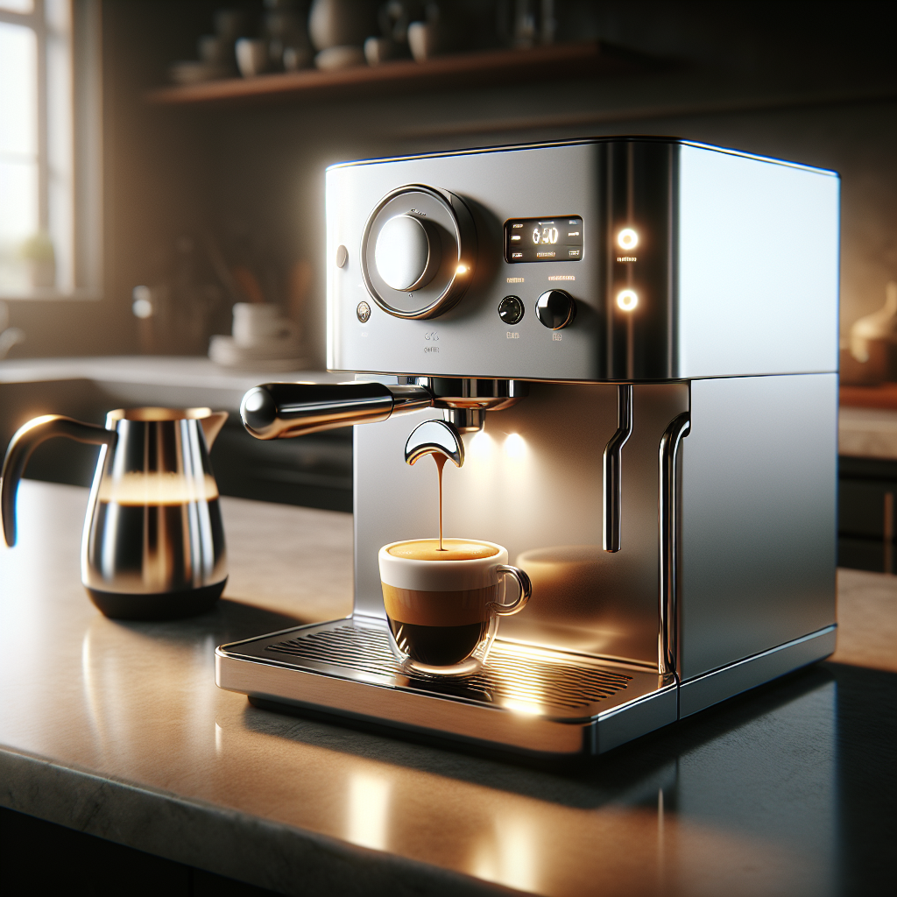

Espresso
Espresso is a concentrated coffee brewed by forcing hot water through finely-ground coffee under pressure. It forms the base for many drinks like lattes and cappuccinos.
Espresso is a concentrated coffee brewed by forcing hot water through finely-ground coffee under pressure. It forms the base for many drinks like lattes and cappuccinos.
The pour-over method involves manually pouring hot water over coffee grounds in a filter, allowing full control of brewing time and flavor extraction.
Latte art is the practice of pouring steamed milk into espresso to create beautiful patterns on the surface, enhancing the coffee drinking experience.